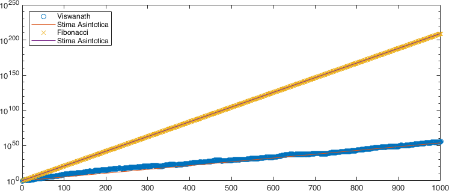

Laboratorio 1 : Introduzione a MATLAB
Contents
Laboratorio 1 : Introduzione a MATLAB#
MATLAB/Simulink è uno strumento software per:
Esecuzione di calcoli matematici ed elaborazione dei segnali,
Analisi e visualizzazione dei dati: possiedi svariati strumenti grafici,
Modellazione di sistemi e fenomeni fisici,
Test e simulazioni di progetti ingegneristici.
Il Desktop di MATLAB#

Fig. 1 Il Desktop di MATLAB#
La command window è dove digiti i comandi MATLAB seguendo il prompt:
>>
La finestra workspace mostra tutte le variabili che hai definito nella sessione corrente. Le variabili possono essere effettivamente manipolate all’interno della finestra dell’area di lavoro.
La command history mostra tutti i comandi MATLAB che hai usato di recente, includendo anche le sessioni passate.
La current folder mostra tutti i file in qualsiasi cartella sia stata selezionata per essere la cartella corrente.
Operazioni aritmetiche e ordine delle operazioni#
Le operazioni di base sono l’addizione (
+), sottrazione (-), la moltiplicazione (*), la divisione (\), l’elevamento a potenza (^),L’ordine delle operazioni è quello canonico adoperato in matematica e segue le usuali convenzioni di una calcolatrice scientifica
Si completano tutte le operazioni tra parentesi
( )usando le seguenti regole di precedenza,Elevamento a potenza (da sinistra verso destra)
Moltiplicazione e divisione (da sinistra verso destra)
Addizione e sottrazione (da sinistra verso destra)
Esempio
Si considerino ad esempio le seguenti operazioni:
30/5*3 5*2^4+4*(3) -1^8 8^(1/3)
Variabili#
Come in ogni linguaggio di programmazione, MATLAB fa utilizzo di variabili, che, in informatica, sono contenitori di dati situate in una porzione della memoria e destinate a contenere valori, che possono (in generale) essere modificati nel corso dell’esecuzione di un programma.
Una variabile è caratterizzata da un nome (inteso solitamente come una sequenza di caratteri e cifre) che deve seguire un insieme di convenzioni che dipende dal linguaggio che si sta adoperando. In MATLAB le seguenti convenzioni devono essere adoperate:
I nomi delle variabili devono iniziare con una lettera,
I nomi possono includere ogni combinazione di lettere, numeri, e underscore,
La lunghezza massima per il nome di una variabile è di 63 caratteri,
MATLAB è case sensitive. La variabile di nome
pAllaè diversa dalla variabile di nomepalla,È buona norma evitare i seguenti nomi:
i,j,pi, e più in generale tutte i nomi di funzioni predefinite di MATLAB come, ad esempio,length,char,size,plot,break,cos,log, etc.È buona norma chiamare le variabili con nomi intellegibili, cioè con nomi che riflettano l’uso che se ne fa all’interno del programma piuttosto che usare dei nomi generici di variabili come ad esempio
x,y,z.
Suggerimento
Se vogliamo calcolare l’aria superficiale di una sfera \(A = 4\pi r^2\) di raggio \(r = 5\), è molto meglio scrivere
raggio = 5;
area_superficiale = 4*pi*raggio^2
al posto di
r = 5;
A = 4*pi*r^2
Quando riapriremo il secondo codice fra un mese le possibilità di ricordarsi cosa intendevamo saranno piuttosto scarse (o, nel mio caso, anche se lo aprissi fra due ore).
Dall’esempio che abbiamo appena inserito nella workspace osserviamo diverse cose
raggio = 5;
area_superficiale = 4*pi*raggio^2
una variabile
raggiodi tipodoubleè stata creata,una posizione di memoria per la variabile
raggioè stata allocata ed inizializzata al valore \(5\),il
;al termine dell’istruzione sopprime la stampa a schermo del contenuto della variabile,la variabile
area_superficialeviene invece creata ed allocata utilizzando invece una delle quantità predeterminate di MATLAB, il valore di \(\pi\), ed il contenuto della variabileraggioche abbiamo definito in precedenza. Poiché non abbiamo terminato la seconda istruzione con un;, vediamo stampato nella command window
area_superficiale =
314.1593
A questo punto possiamo cambiare il valore della variabile raggio semplicemente
riassegnandolo ad una nuova quantità senza alterare il valore conservato nel
workspace della variabile area_superficiale.
Per mostrare il contenuto di una variabile, si può utilizzare il comando disp,
ad esempio:
disp("L'area superficiale della sfera è:"); disp(area_superficiale);
che produrrà nella command window:
L'area superficiale della sfera è:
314.1593
Variabili carattere e stringhe#
Non siamo obbligati ad usare unicamente variabili di tipo numerico. Ad esempio possiamo scrivere nella command window:
studente='C.F. Gauss'
che ci stamperà
studente =
'C.F. Gauss'
Abbiamo costruito un”array di char, cioè una variabile di nome studente
a cui abbiamo assegnato uno spazio di memoria e in cui abbiamo inserito i
caratteri C.F. Gauss. Nel dubbio, possiamo interrogare MATLAB riguardo il
tipo della variabile con il comando
whos studente
che ci restituirà
Name Size Bytes Class Attributes
studente 1x10 20 char
Una variante all”array di char è quello di definire invece un oggetto
string, cioè assegnare
studente_stringa = "C.F. Gauss"
per cui whos studente_stringa ci dirà invece
Name Size Bytes Class Attributes
studente_stringa 1x1 156 string
Riassumendo:
Un array di
charè una sequenza di caratteri, proprio come un vettore numerico è una sequenza di numeri. Un suo uso tipico è quello di memorizzare brevi parti di testo come vettori di caratteri,Un oggetto
string, ovvero un array distringè un contenitore per parti di testo. Gli array di stringhe forniscono una serie di funzioni per lavorare con il testo come dati.
Alcune funzioni di cui è opportuno ricordarsi#
MATLAB contiene un grande numero di funzioni matematica già implementate, alcune di quelle di più frequente utilizzo sono riportate nella Tabella 1
Funzione |
MATLAB |
Funzione |
MATLAB |
|---|---|---|---|
Coseno |
|
Radice quadrata |
|
Seno |
|
Esponenziale |
|
Tangente |
|
Logaritmo (base 10) |
|
Cotangente |
|
Logaritmo (naturale) |
|
Arcocoseno |
|
Arrotonda all’intero più vicino |
|
Arcotangente |
|
Arrotonda all’intero \(\leq\) |
|
Arcocotangente |
|
Arrotonda all’intero \(\geq\) |
|
Pericolo
Le funzioni trigonometriche così espresse assumono gli input in radianti, ovvero
le funzioni inverse restituiscono l’angolo in radianti. Le versioni che fanno
utilizzo dei gradi si invocano con il suffisso d, e.g., cosd, acosd.
Se si incontra una funzione di cui non si conosce l’utilizzo è possibile interrogare la guida di MATLAB dalla command window con, ad esempio,
help cosd
che stamperà delle informazioni essenziali
cosd Cosine of argument in degrees.
cosd(X) is the cosine of the elements of X, expressed in degrees.
For odd integers n, cosd(n*90) is exactly zero, whereas cos(n*pi/2)
reflects the accuracy of the floating point value for pi.
Class support for input X:
float: double, single
See also acosd, cos.
Documentation for cosd
Other functions named cosd
per cui poi si potrà accedere alle informazioni complete utilizzando il link Documentation for ….
Un’ultima coppia di funzioni estremamente utili è rappresentata dalle funzioni
clearche svuota la workspace di tutte le variabili, ovveroclear nomevariabile1 nomevariabile2che cancella unicamente le variabilinomevariabile1enomevariabile2,clcche cancella il contenuto stampato nella command window.
Creazione di Script#
Tutti (o quasi) i comandi visti fino ad ora sono in realtà degli script o delle funzioni pre-costruite e rese disponibili nell’ambiente generale. MATLAB permette all’utente di costruire i suoi script e le sue funzioni per la soluzione di problemi specifici.
Uno script file è semplicemente una collezione di comandi eseguibili di MATLAB e, in alcuni casi più raffinati, di interfacce verso software esterno prodotto in C o in Fortran.
Per creare un nuovo script è sufficiente fare click sull’icona New script, Fig. 2, che aprirà una nuova finestra editor in cui è possibile scrivere il proprio programma.

Fig. 2 Crea un nuovo script.#
Come abbiamo detto uno script non è nient’altro che una sequenza di comandi da inserirsi nella finestra dell’editor. Per poter eseguire lo script è necessario che questo sia salvato nella Current Folder.
Avvertimento
Le convenzioni per i nomi degli script sono le stesse che per i nomi delle variabili (Variabili), in particolare è estremamente importante evitare di usare nomi di funzioni predefinite di MATLAB.
Per eseguire lo script si può
Fare click sul bottone Run

Inserire nella command window il nome con cui è stato salvato lo script (senza l’estensione
.m).
Esempio
Trasformiamo in uno script il nostro codice per il calcolo dell’area superficiale di una sfera. Ovvero, scriviamo all’interno dell’editor:
raggio = 5;
area_superficiale = 4*pi*raggio^2;
disp("L'Area Superficiale della Sfera è: "); disp(area_superficiale);
Salviamo il file come areasfera.m ed eseguiamolo una volta con il pulsante Run
ed una volta scrivendo areasfera nella Command Window.
Riassumendo I file di script sono estremamente utili quando si intende eseguire sequenze di molti comandi MATLAB. Immaginiamo ad esempio una sequenza di calcoli divisa in \(n\) comandi, dopo averli inseriti tutti nel prompt ci accorgiamo che il valore assegnato ad una variabile al primo comando è sbagliato, o vogliamo cambiarlo. Lavorando solo nella command window dovremmo correggere l’errore nel primo comando, quindi eseguire di nuovo gli altri \(n-1\) comandi.
Se avessimo prodotto invece uno script, potremmo semplicemente correggere il primo comando ed eseguire nuovamente l’intera sequenza premendo un solo tasto o scrivendo un solo comando: il nome dello script.
Creazione di Funzioni#
Una funzione (detta anche, a seconda del linguaggio di programmazione, routine, subroutine, procedura, metodo), è un particolare costrutto sintattico che raggruppa all’interno di un singolo programma, una sequenza di istruzioni in un unico blocco. Il suo scopo è quello di portare a termine una operazione, azione, o elaborazione in modo tale che, a partire da determinati input, restituisca determinati output.
In MATLAB una funzione di nome miafunzione è dichiarata come function [y1,...,yN] = miafunzione(x1,...,xM) che accetta come input x1,...,xM e restituisce come
output y1,...,yN. Questa dichiarazione deve essere la prima istruzione
eseguibile del file che contiene la funzione. Nomi validi di funzioni iniziano
con un carattere alfabetico e possono contenere lettere, numeri o underscore.
Si può salvare una funzione in
un file funzione che contiene solamente definizioni di funzione. Il nome del file deve corrispondere esattamente con il nome della prima funzione contenuta nel file;
uno script che contiene comandi e definizioni di funzione. In questo caso le funzioni devono essere contenute alla fine del file e lo script non può avere lo stesso nome di nessuna delle funzioni contenute al suo interno.
I file possono includere molteplici funzioni locali o innestate. Al fine di
produrre del codice leggibile, è consigliato utilizzare sempre la parola chiave
end per indicare la fine di ogni funzione all’interno di un file.
In particolare, la parola chiave end è richiesta ogni qual volta:
una qualunque funzione in un file contiene una funzione innestata,
la funzione è una funzione locale all’interno di un file che contiene solo funzioni e, a sua volta, ogni funzione locale usa la parola chiave
end,la funzione è una funzione locale all’intero di uno script.
Per interrompere l’esecuzione di una funzione prima del raggiungimento dell”end
finale, si può utilizzare la parola chiave return che, come suggerisce il nome,
restituisce il controllo allo script che ha invocato la funzione. Una chiamata
diretta allo script o alla funzione che contiene return, non richiama alcun
programma di origine e restituisce invece il controllo al prompt dei comandi.
Esempio
Trasformiamo in una funzione il nostro codice per il calcolo dell’area superficiale di una sfera. Ovvero, scriviamo all’interno dell’editor:
function [area_superficiale] = areasfera(raggio)
%%AREASFERA Funzione che calcola l'area superficiale di una sfera di raggio r
area_superficiale = 4*pi*raggio^2;
end
Salviamo il file come areasfera.m e possiamo eseguire la funzione direttamente
nella command window come
area_superficiale = areasfera(raggio),area_superficiale = areasfera(raggio);,areasfera(raggio). Si osservino le differenze.
Array e Matrici#
Abbiamo discusso fino ad ora l’utilizzo di variabili scalari, tuttavia in MATLAB i dati sono rappresentati in maniera naturale come matrici, array e, più in generale, tensori. È possibile applicare tutte le operazioni dell’algebra lineare agli array, in più si possono creare griglie comuni, combinare array esistenti, manipolare la forma e il contenuto di un array e utilizzare diverse modalità di indicizzazione per accedere ai loro elementi.
In realtà, abbiamo già surrettiziamente lavorato con degli array, poiché in MATLAB anche le variabili scalari non sono nient’altro che array unidimensionali, in notazione matematica un \(a \in \mathbb{R}\) è sempre un \(a \in \mathbb{R}^{1\times 1}\). Infatti se scriviamo nella command window:
a = 100;
whos a
il sistema ci restituirà
Name Size Bytes Class Attributes
a 1x1 8 double
Immaginiamo ora di disporre di uno specifico insieme di dati, che vogliamo disporre
in una matrice. Possiamo farlo utilizzando la semantica delle parentesi quadre [ ].
Una singola riga di dati contiene spazi o virgole , tra gli elementi e fa uso di
un punto e virgola ; per separare le righe.
Ad esempio, se vogliamo crea una singola riga di tre elementi numerici
v = [ 1 2 3]
oppure
v = [ 1, 2, 3]
La dimensione della matrice risultante è 1 per 3, poiché ha una riga e tre colonne.
Una matrice di questa forma viene definita vettore riga e se chiamiamo la
funzione isrow(v) ci vediamo rispondere
ans =
logical
1
Similmente, possiamo costuire un vettore colonna come
w = [ 1; 2; 3]
per cui abbiamo che invece iscolumn(w) ci restituirà
ans =
logical
1
Più in generale, possiamo costruire una matrice di \(4 \times 4\) elementi come
A = [ 1 2 3 4; 5 6 7 8; 9 10 11 12; 13 14 15 16]
oppure come
A = [ 1, 2, 3, 4; 5, 6, 7, 8; 9, 10, 11, 12; 13, 14, 15, 16]
o
A = [ 1, 2, 3, 4
5, 6, 7, 8
9, 10, 11, 12
13, 14, 15, 16]
In tutti i casi ci vedremo restituire
A =
1 2 3 4
5 6 7 8
9 10 11 12
13 14 15 16
Possiamo indagare le dimensioni di una matrice mediante la funzione size(A),
che nel caso precedente ci restituirà
ans =
4 4
Costruttori predefiniti#
Costruire matrici semplicemente inserendo i valori all’interno in sequenza o in maniera esplicita è chiaramente scomodo (e molto noioso). A questo scopo MATLAB possiede i costruttori riportati in Tabella 2.
Funzione |
Operazione |
|---|---|
|
Crea un array di tutti zeri Per costruire la matrice \(0 = (O)_{i,j}\) \(i,j=1,\ldots,n\) scriviamo O = zeros(n,m);
|
|
Crea un array di tutti uno Per costruire la matrice \(1 = (E)_{i,j}\) \(i,j=1,\ldots,n\) scriviamo E = ones(n,m);
|
|
Crea un array di numeri casuali uniformemente distribuiti in \([0,1]\). R = rand(n,m);
Possiamo generare numeri uniformemente distribuiti nell’intervallo \([a,b]\) come R = a + (b-a).*rand(n,m);
|
|
Matrice identità costruisce la matrice identità \((I)_{i,i} = 1\), \(i=1,\ldots,n\)
e \(0\) altrimenti |
|
Crea una matrice diagonale o estrae gli elementi diagonali di una matrice data. Se |
Altre funzioni dello stesso tipo sono true, false, blkdiag e i loro
funzionamento può essere esplorato mediante la funzione help.
Il secondo insieme di funzioni estremamente utile per costruire matrici è quello
che si occupa di gestire le concatenazioni. Queste possono essere ottenute sia
utilizzando la notazione con le parentesi quadre [ ], ad esempio,
A = rand(5,5);
B = rand(5,10);
C = [A,B];
costruisce a partire dalle matrici \(A \in \mathbb{R}^{5 \times 5}\), \(B \in \mathbb{R}^{5\times 10}\), la matrice \(C \in \mathbb{R}^{5\times 15}\) ottenuta ponendo una accanto alle altre tutte le colonne di \(A\) seguite da quelle di \(B\). Alla stesso modo, si può ottenere la concatenazione verticale come
A = rand(8,8);
B = rand(12,8);
C = [A;B];
che genererà la matrice \(C \in \mathbb{R}^{20,8}\) ottenuta impilando tutte le righe di \(A\) seguite dalle righe di \(B\).
Pericolo
Le operazioni di concatenazione devono essere fatte tra matrici di dimensione compatibile, non possono esserci «avanzi» tra le dimensioni in oggetto. Per provare ad ottenere un errore si esegua:
A = rand(5,5);
B = rand(5,10);
C = [A;B];
che restituirà
Error using vertcat
Dimensions of arrays being concatenated are not consistent.
Al posto della notazione con le parentesi quadre è possibile fare uso delle
funzioni horzcat e vertcat che corrispondono, rispettivamente, alle
concatenazioni della forma [,] e [;].
Se vogliamo costruire invece una matrice diagonale a blocchi a partire dai blocchi
diagonali possiamo utilizzare la funzione blkdiag il cui help ci restituisce
esattamente
blkdiag Block diagonal concatenation of matrix input arguments.
|A 0 .. 0|
Y = blkdiag(A,B,...) produces |0 B .. 0|
|0 0 .. |
Class support for inputs:
float: double, single
integer: uint8, int8, uint16, int16, uint32, int32, uint64, int64
char, logical
Slicing: accedere agli elementi#
Il modo più comune di accedere ad un determinato elemento di un array o di una matrice è quello di specificare esplicitamente gli indici degli elementi. Ad esempio, per accedere a un singolo elemento di una matrice, specificare il numero di riga seguito dal numero di colonna dell’elemento:
A = [ 1 2 3 4
17 8 2 1];
A(2,1)
che stamperà nella command window 17, cioè l’elemento in posizione riga
2 e colonna 1 di A (\(a_{2,1}\)).
Possiamo anche fare riferimento a più elementi alla volta specificando i loro
indici in un vettore. Ad esempio, accediamo al primo e al quarto elemento
della seconda riga della A precedente, facendo
A(2,[1,4])
che restituirà
ans =
17 1
Per accedere agli elementi in un intervallo di righe o colonne, è possibile
utilizzare l’operatore due punti :. Ad esempio, possiamo accedere accedi
agli elementi dalla prima alla quinta riga e dalla seconda alla sesta colonna di
una matrice \(A\) come
A = rand(10,10);
A(1:5,2:6)
Nel caso si voglia scorrere fino al termine di una dimensione è possibile
sostituire il valore di destra nei : con la parola chiave end, ad esempio:
A(1:5,2:end)
Invece l’utilizzo di : senza valori di inizio/fine estrae tutte le entrate della
dimensione relativa, ad esempio, 5 colonna, A(:,5), oppure colonne dalla quarta
alla settima, A(:,4:7).
Nota
In generale, si può utilizzare l’indicizzazione per accedere agli elementi di qualsiasi array in MATLAB indipendentemente dal tipo di dati o dalle dimensioni.
L’ultimo modo di fare uno slicing di un vettore di cui vogliamo parlare è
quello mediante vettori logici. L’utilizzo di indicatori logici true e
false è particolarmente efficace quando si lavora con istruzioni condizionali.
Ad esempio, supponiamo di voler sapere se gli elementi di una matrice \(A\)
sono maggiori degli elementi corrispondenti di un’altra matrice \(B\).
L’operatore di confronto applicato alle due matrici restituisce un array
logico i cui elementi sono 1 quando un elemento in \(A\) soddisfa il confronto con il
corrispondente elemento in \(B\).
A = [1 2 6; 4 3 6];
B = [0 3 7; 3 7 5];
ind = A>B
A(ind)
B(ind)
ci restituisce
ind =
2×3 logical array
1 0 0
1 0 1
ans =
1
4
6
ans =
0
3
5
Gli operatori di confronto non sono gli unici per cui è possibile compiere questa
operazione, MATLAB stesso implementa un certo numero di funzioni utili a questo
scopo, si vedano isnan, isfinite, isinf, ismissing. È inoltre possibile
combinare insieme diverse richieste mediante l’uso degli operatori logici,
si veda più avanti la sezione su Selezione e Strutture Condizionali.
Operazioni tra array e matrici#
MATLAB supporta tutte le operazioni che hanno senso in termini di algebra lineare, dunque prodotti matrici-vettore, somme di matrici e di vettori, trasposizione, coniugio, etc., con i medesimi vincoli di consistenza tra gli operatori. Specificamente, il prodotto \(A \mathbf{v}\) con \(A \in \mathbb{R}^{n \times k_1}\) e \(\mathbf{v} \in \mathbb{R}^{k_2}\) è possibile se e solo se \(k_1 \equiv k_2\), consideriamo ad esempio
A = [1 2 3 4;
4 3 2 1;
2 4 3 1;
3 2 4 1];
v1 = [1,2,3,4];
v2 = [1;2;3;4];
e proviamo a calcolare
A*v1da cui otteniamo un errore:
Error using *
Incorrect dimensions for matrix multiplication. Check that the number of columns in the first matrix matches the number of rows in the second matrix. To perform elementwise multiplication, use '.*'.
poiché stiamo cercando di fare un’operazione che non ha senso dal punto di vista dell’algebra lineare.
A*v2è invece l’operazione corretta e otteniamo
ans =
30
20
23
23
v1*Aanche questa operazione ha senso dal punto di vista matriciale e infatti otteniamo
ans =
27 28 32 13
v2*Aha il medesimo problema della prima, cioè abbiamo di nuovo delle dimensioni che non sono consistenti
Error using *
Incorrect dimensions for matrix multiplication. Check that the number of columns in the first matrix matches the number of rows in the second matrix. To perform elementwise multiplication, use '.*'.
A*v1'introduciamo qui l’operazione di trasposta-coniugata (che poiché stiamo utilizzando vettori di numeri reali coincide con la semplice operazione di trasposizione.'), che ci porta ad avere le dimensioni corrette e ci restituisce
ans =
30
20
23
23
A*v2'la trasposizione in questo caso rende le dimensioni div2incompatibili per cui otteniamo di nuovo il medesimo errore
Error using *
Incorrect dimensions for matrix multiplication. Check that the number of columns in the first matrix matches the number of rows in the second matrix. To perform elementwise multiplication, use '.*'.
Avvertimento
Il messaggio di errore che abbiamo incontrato ci dice che l’operazione non ha senso
in termine delle usuali operazioni dell’algebra lineare, tuttavia ci suggerisce
che quello che potevamo avere intenzione di fare era un prodotto elementwise
ovvero «elemento ad elemento». Questa operazione si ottiene utilizzando l’operatore
.*, cioè con un . prefisso davanti all’operatore di prodotto che in genere
significa proprio «esegui in maniera elemento-ad-elemento». Proviamo con la prima
operazione sbagliata che abbiamo proposto:
A.*v1
che ci restituisce
ans =
1 4 9 16
4 6 6 4
2 8 9 4
3 4 12 4
Che operazione abbiamo eseguito? Si provi ad eseguire anche le operazioni di elevamento a potenza
A^3
A.^3
v1^3
v1.^3
e si descriva il risultato.
Le ultime due operazioni che ci sono rimaste da descrivere sono +/-. Di nuovo
dobbiamo preoccuparci della compatibilità delle operazioni che vogliamo compiere.
Se vogliamo essere sicuri di star eseguendo la somma tra array e matrici che abbiamo
in mente dobbiamo assicurarci che le dimensioni siano compatibili.
Supponiamo di avere i vettori riga e colonna
v = [1 2 3 4]
w = [1
2
3
4]
se vogliamo sommarli o sottrarli e ottenere un vettore rispettivamente riga o colonna dobbiamo fare in modo che abbiano ambedue la dimensione corretta. Ovvero, dobbiamo avere, rispettivamente,
v + w'
oppure
v' + w
Se inavvertitamente sommiamo i due vettori come
v + w
otteniamo invece
ans =
2 3 4 5
3 4 5 6
4 5 6 7
5 6 7 8
che è invece una matrice! Non esattamente quello che ci aspettavamo (riuscite a capire che operazione abbiamo ottenuto?). Uguale cautela va esercitata nello scrivere operazioni di somma/sottrazioni tra matrici e vettori. Si provi ad eseguire:
A = pascal(4);
v = [1 3 2 4];
A + v
A + v'
A + 0.5
v + 1
È legittimo domandarsi a questo punto perché mai queste operazioni vengano eseguite senza restituire errori. Anche se dal punto di vista della pura algebra lineare queste operazioni non sono di immediata sensatezza, dal punto di vista implementativo permettono di semplificare (e velocizzare) un certo numero di operazioni che altrimenti richiederebbero diverse righe di codice (la cui ottimizzazione per le performance non è scontata) per essere implementate.
Selezione e Strutture Condizionali#
Funzione di MATLAB |
Descrizione |
|---|---|
|
Esegue comando se la condizione |
|
Esegue uno o più gruppi di comandi a seconda che la variabile |
|
Esegue i comandi nel gruppo |
Consideriamo il seguente esempio che simula il lancio di una moneta.
a = rand();
if a < 0.5
disp('Testa!')
else
disp('Croce')
end
Ad ogni nuova esecuzione rand() genera un numero casuale in \([0,1]\) con
probabilità uniforme. Il comando if controlla se il numero casuale generato
è \(< 0.5\) ed in questo caso entra nel primo gruppo di codice. Altrimenti, abbiamo
ottenuto un numero \(> 0.5\) e rientriamo nel secondo gruppo di codice. Possiamo
decidere di simulare anche un dado a tre facce nel seguente modo
a = rand();
if a < 1/3
disp('1')
elseif a >= 1/3 & a < 2/3
disp('2')
else
disp('3')
end
in cui abbiamo utilizzato il comando elseif per avere un ramo aggiuntivo.
Nota
All’interno dei nostri controlli di tipo if (e più in generale) possiamo combinare
insieme il risultato di diverse operazioni logiche. Queste sono raccolte nella
Tabella Tabella 4. Altre funzioni che agiscono sui vettori di logici
e che potete esplorare richiamando la funzione help sono any e all.
Funzione di MATLAB |
Descrizione |
|---|---|
|
AND Logico |
|
NOT Logico |
|
OR Logico |
|
OR Esclusivo Logico |
Vediamo anche un esempio dell’istruzione di tipo switch.
controllo = input("Inserisci un numero intero tra 0 e 3: ");
switch controllo
case 0
A = pascal(4,4);
disp(A);
case 1
A = ones(4,4);
disp(A);
case 2
A = eye(4,4);
disp(A);
case 3
A = rand(4,4);
disp(A);
otherwise
disp("Non so cosa fare con questo input!")
end
Si sarebbe potuto implementare lo stesso codice con una serie di if e elseif
ed un else, ma questo approccio è più rapido se non c’è la necessità di
imporre molti controlli logici.
L’ultimo controllo che vogliamo testare è try. Per cui potete provare il seguente
codice.
try
A = rand(5,5);
b = ones(1,5);
A*b
catch
disp("C'è qualche problema con le dimensioni!");
end
Poiché l’operazione algebrica che abbiamo richiesto non è ben posta (provate ad
eseguirla al di fuori dell’operazione di try) il try cattura l’errore e
invece di arrestare l’esecuzione esegue il codice nella clausola catch. Potete
correggere il codice nel primo blocco e verificare che in tal caso non entrerete
nel catch.
Cicli e Cicli Innestati#
All’interno di qualsiasi programma, è possibile definire sezioni di codice che si ripetono in un ciclo.
Funzione di MATLAB |
Descrizione |
|---|---|
|
ciclo |
|
ciclo |
|
Termina in maniera forzata l’esecuzione di un ciclo |
|
Passa il controllo all’iterata successiva di un ciclo |
|
Mette temporaneamente in pausa l’esecuzione di MATLAB. |
Utilizziamo un ciclo for per calcolare la somma dei primi n numeri interi.
n = input("Inserisci un numero intero n: ");
somma = 0;
for i=1:n
somma = somma + i;
end
fprintf("La somma degli interi da 1 a %d è %d.\n",n,somma);
Questo non è ovviamente il modo migliore di fare questa operazione, avremmo
ad esempio potuto calcolare la stessa quantità come sum(1:10). Oppure, sfruttare
un po” di idee matematiche per ricordarci che
\(\displaystyle S_n = \sum_{i=1}^{n} i = \frac{n(n+1)}{2}.\) Ma è servito al nostro
scopo dimostrativo.
Vediamo ora un esempio di ciclo while.
somma = 0;
while somma < 10
somma = somma + rand();
end
fprintf("Il valore finale della somma è: %f\n",somma);
Poiché abbiamo inizializzato la variabile somma a 0, la condizione di innesco
del ciclo while è true e dunque cominciamo ad iterare. Ad ogni nuova istanza
del ciclo un nuovo numero casuale viene generato e aggiunto alla variabile somma.
Non appena il valore di somma supera 10, il ciclo viene interrotto e il messaggio
viene stampato a schermo.
Alcuni esercizi#
Gli esercizi qui raccolti hanno per lo più lo scopo di verificare che abbiate assorbito queste informazioni generali sul linguaggio MATLAB, cosicché dal prossimo laboratorio ci si possa concentrare sull’implementazione di algoritmi prettamente numerici e sulle questioni affrontate nelle lezioni di teoria.
Esercizio 1
La costante aurea \(\varphi\) si può esprimere in forma compatta come
Ammettiamo di non avere un algoritmo per estrarre le radici quadrate, allora possiamo provare ad approssimare il valore di \(\phi\) usando la sua espansione in frazione continua:
Si scriva una funzione con il seguente prototipo:
function phi = frazionephi(n)
%%FRAZIONEPHI prende in input il numero di termini da utilizzare
%nell'approssimazione con frazione continua della sezione aurea e
%restituisce l'approssimazione.
end
Per costruire l’implementazione della funzione si usi un ciclo
for. Suggerimento si organizzi il calcolo partendo dal «livello più basso» verso quello più alto.Supponiamo di sapere che un valore esatto di \(\varphi\) con 16 cifre significative è
1.6180339887498949. Si modifichi la funzione precedente in una nuova funzione con il seguente prototipofunction [n,phi] = quantiterminiphi(tol) %%QUANTITERMINIPHI data in input una tolleranza tol sulla distanza tra %l'approssimazione della costante phi e il valore reale questa funzione %ci restituisce il numero di termini necessari e il valore dell'approssimazione phitrue = 1.6180339887498949; end
Per farlo si usi un ciclo
whilee la funzioneabs(che implementa il valore assoluto) per misurare l”errore assoluto tra la nostra approssimazione e il valore vero.Si usi la funzione
fprintfper stampare a schermo una tabella con tolleranza, numero di termini per raggiungerla, valore ottenuto ed errore per le tolleranze da1e-1,1e-2, fino a1e-10.
Esercizio 2.
Esercitiamoci ora nel costruire una funzione ricorsiva. Una sequenza collegata alla costante aurea \(\varphi\) è la sequenza di Fibonacci, ovvero la sequenza di numeri interi \(\{F_n\}_n = \{1,1,2,3,5,\ldots\}\) data da
Si implementi una funzione ricorsiva che calcola l”\(n\)mo numero di Fibonacci \(n\) utilizzando solamente la struttura condizionale
switch, di cui riportiamo al solito il prototipo.
function f = fibonacci(n)
%FIBONACCI Implementazione ricorsiva della successione di Fibonacci. Prende
%in input il numero n e restituisce l'n-mo numero di Fibonacci Fn.
end
La funzione così costruita ha uno spiacevole difetto, se gli diamo in pasto \(n\) ci fornisce l”\(n\)mo numero, tuttavia se successivamente chiediamo l”\(n+1\)mo il calcolo per ottenerlo non ha memoria di quello che abbiamo fatto e ricalcola comunque tutti i precedenti. Costruiamo ora una versione non ricorsiva della funzione
fibonacci. Possiamo ottenerla in diversi modi, ma quasi sicuramente avremo bisogno di un ciclofor. Riportiamo come al solito il prototipo.
function f = fibonaccinonrecursive(n)
%FIBONACCINONRECURSIVE Implementazione non ricorsiva della successione
% di Fibonacci. Prende in input il numero n e restituisce un vettore
% che contiene tutti i numeri di Fibonacci da F0 a Fn.
end
Sfruttiamo ora la seconda implementazione che abbiamo fatto della funzione di Fibonacci per costruire una sequenza diversa. Consideriamo la sequenza di Viswanath [Vis00] così definita
dove \(v_{0}\) e \(V_{1}\) sono assegnati a piacere e il \(\pm\) ha la seguente
interpretazione: con probabilità \(1/2\) sommiamo, con probabilità \(1/2\)
sottraiamo. Un’idea per implementare questa funzione è quella di utilizzare la
funzione sign (provate a vedere a cosa serve facendo help sign).
Un prototipo per questa funzione è ad esempio
function v = viswanath(n,v0,v1)
%VISWANATH Implementazione non ricorsiva della successione
% di Viswanath. Prende in input il numero n, i valori di v0 e v1 e
% restituisce un vettore che contiene tutti i numeri di Viswanath da v0 a vn.
end
Una volta costruita la nostra funzione, possiamo visualizzare cosa otteniamo con essa (e confrontarlo con la successione di Fibonacci) tramite lo script:
%% Test della successione di Viswanath
n = 1000; % Numero di termini
% Calcoliamo la successione di Fibonacci
f = fibonaccinonrecursive(n);
% Calcoliamo la successione di Viswanath
v0 = 1;
v1 = 1;
v = viswanath(n,v0,v1);
% Valore asintotico
c = 1.13198824;
phi = (1+sqrt(5))/2;
figure(1)
semilogy(0:n,abs(v),'o',0:n,c.^(1:n+1),'-',0:n,f,'x',0:n,phi.^(1:n+1),'-');
legend({'Viswanath','Stima Asintotica','Fibonacci','Stima Asintotica'},...
'Location','northwest')
Nella parte terminale dello script % Valore asintotico andiamo a confrontare
in scala semi-logaritmica sull’asse delle \(y\) i valori assoluti dei numeri
\(\{v_n\}_n\) e gli \(\{F_n\}_n\). In particolare possiamo osservare che per
entrambe le sequenza troviamo un numero \(k\) per cui queste crescono come
\(k^{n+1}\). In particolare, per la sequenza di Fibonacci questo \(k\) è la costante
aurea \(\varphi\) dell’esercizio precedente, mentre per la sequenza di Viswanath
è il valore \(c = 1.13198824\ldots\) (per una dimostrazione si veda [Vis00]).
Approfittiamo di questo anche per guarda come si possono ottenere dei
grafici di funzione su MATLAB, per decodificare i comandi di questa sezione
aiutatevi con help. Un esempio del grafico ottenuto con lo script precedente
è il seguente:

Esercizio 3
Esploriamo ancora le funzioni di plot di MATLAB. Cerchiamo di produrre una stampa dell’insieme frattale di Mandelbrot. Questo insieme è l’insieme è l’insieme dei numeri complessi \(c\) per cui la funzione \(f_{c}(z)=z^{2}+c\) non diverge quando viene iterata a partire da \(z = 0\), cioè, l’insieme di quei punti \(c\) per cui la sequenza \(f_{c}(0),f_{c}(f_{c}(0)),\ldots\) resta limitata in valore assoluto. Possiamo costruire uno script MATLAB che ci permetta di disegnare un’approssimazione di questo insieme.
Utilizziamo la funzione
linspaceper costruire l’insieme dei numeri complessi \(c\) su cui vogliamo fare la valutazione. Poichélinspaceproduce per noi un vettore reali, dobbiamo costruirne due – uno per ciascuna direzione – e trasformarli in un insieme di coppie di valutazioni con la funzionemeshgrid. Un buon insieme reale da valutare per disegnare l’insieme di Mandelbrot è \([-2.1,0.6]\times[-1.1,1.1]\).Ora che abbiamo le valutazioni reali è necessario trasformare in numeri complessi \(c\). Possiamo ottenere questo risultato utilizzando la funzione
complex:C = complex(X,Y)sulla coppia di matrici di valutazioni ottenute dameshgrid.Possiamo ora implementare un certo numero fissato di iterazioni della funzione \(f_{c}(z)=z^{2}+c\) mediante un ciclo
for.Concludiamo l’esercizio disegnando l’insieme di Mandelbrot con la funzione
contourf(x,y,double(abs(Z)<1e6))
title('Insieme di Mandelbrot')
che è una buona occasione per guardare cosa fa la funzione di plot contourf
(help contourf).
Bibliografia#
- Vis00(1,2)
Divakar Viswanath. Random Fibonacci sequences and the number $1.13198824…$. Math. Comp., 69(231):1131–1155, 2000. URL: https://doi.org/10.1090/S0025-5718-99-01145-X, doi:10.1090/S0025-5718-99-01145-X.